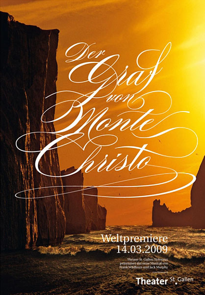

Encore: A Musical Journey Through Languages
Welcome to "MusicalMosaic" - A World of Diverse Voices on Stage
The world of musicals is as diverse as the languages spoken across the globe. Each language brings a unique flavor to the stage, influencing the rhythm, emotion, and storytelling of the performances. Here, we’ve curated a list of exceptional musicals, categorized by their language, to showcase how different cultures express their creativity through song and story. Whether you're captivated by the grandeur of a Broadway show, intrigued by a German operetta, or enchanted by a French classic, you'll find a wealth of musical masterpieces waiting to be explored in their original linguistic beauty.
So, let's dive into the world of musicals and discover the hidden language of the stage.
-
English
English-language musicals have become synonymous with global theatrical success. From the vibrant streets of New York City to London's West End, English musicals capture a wide array of emotions, often blending grand spectacle with deep storytelling.
- Alexander Hamilton

- Chicago
- Next To Normal
- Alexander Hamilton
-
German
German musicals tend to be deeply rooted in historical drama and emotional depth. With their often intense themes and intricate musical scores, German-language productions command a certain seriousness that resonates with audiences.
- Elisabeth
- Mozart! das Musical
- Der Graf von Monte Christo
-
French
France has a long history of nurturing rich, emotive musicals that weave together elements of romance, revolution, and historical intrigue. French musicals often have a distinctive blend of sophistication and passion, capturing the heart and soul of the stories they tell.
- Le Rouge et Le Noir
- Mozart, l'opéra rock

- 1789:Les Amants de la Bastille
If you'd like, you can check more details on IMDB